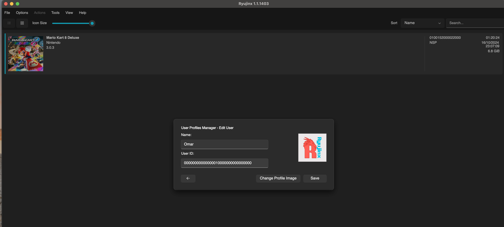

Tutoriel MacOS
Vous êtes bien sur le tutoriel pour MacOS. Commençons !
Aller à l'étape 1
Dans cette étape, vous allez apprendre à télécharger l'émulateur pour Mac OS.
Cliquez sur le boutton ci dessous pour accédez à la page d'installation de l'émulateur
Installer RyujinxUne fois arrivez sur la page vous devriez trouver cette section :
Une fois que vous avez installé Ryujinx il ne vous manquera plus qu'à extraire le fichier, et ensuite vous mettez dans application :
Lancez l'application pour la première fois
Vous allez voir une erreur s'afficher sur votre Suyu et c'est normal cliquez sur ok ou yes, nous allons régler ça !
Dans cette étape nous allons en premier temps télécharger les clés de productions
Et par la suite les introduire dans l'émulateur
Cliquez sur le boutton ci dessous pour télécharger le dossier contenant les prod keys
Télécharger les clésUne fois téléchargé vous allez extraire le dossier et vous aurez ces 2 fichiers la :
Ensuite allez dans Ryujinx, File->Open Ryujinx Folder
Vous allez arriver ici :
Rendez vous dans le dossier system et glissez-y vos deux fichiers
Maintenant vous pouvez redémarrer Ryunjix
Dans cette étape nous allons en premier temps télécharger le firmware
Et par la suite l'installer dans l'émulateur
Cliquez sur le boutton ci dessous pour télécharger le dossier contenant le firmware
Télécharger le firmwareUne fois téléchargé vous allez extraire votre dossier firmware pour avoir tout dans un dossier :
Maintenant retournez dans Ryujinx et allez dans Tools->Install Firmware, choisissez l'option que vous voulez
Bravo vous avez maintenant les clés et le firmware d'installer dans votre émulateur
Dans cette étape nous allons télécharger le jeu et l'implenter dans Ryujinx
Le fichier contient le jeu dans sa dernière version, ainsi que tous les DLC additionnels
Cliquez sur le boutton ci dessous pour télécharger le jeu
Télécharger le jeuUne fois le jeu installer vous allez le mettre dans un dossier, ce dossier servira à y mettre tout vos jeux
Rendez vous maintenant dans Options->Settings
Ajoutez maintenant votre dossier où ce trouve vos jeux pour qu'ils s'affichent directement sur la page d'accueil de l'émulateur
Avant de commencez à pouvoir jouer, nous allons encore faire quelques configuration sur l'émulateur
Allez dans l'onglet Options->Manage User Profiles
Modifier et mettez votre Prénom/Pseudo, ce sera ce qui s'affichera lors de nos partis multijoueur
Ensuite allez dans Options->Settings et dans l'onglet "Input"
Prenez le temps de bien configurer votre manette
Ensuite mettez les paramètres suivants, pour une expérience optimale de jeu !
Et enfin configurez votre mii !
Rendez vous dans File->Open Applet->Mii Edit Applet
Rendez vous sur la page download de Zero Tier en cliquant sur le boutton ci dessous
Installer Zero TierProcédez à l'installation
Ensuite lancez l'application Zero Tier
Cliquez sur Join Network
Entrez la clé suivante : d3ecf5726d27e0dd
Cliquez sur Join
Et voila bien joué
Maintenant retournez dans Ryujinx Options->Settings et allez dans l'onglet Network
Dans le network interface il faudra mettre le réseau correspondant à Zero Tier
Vous pouvez utiliser cette commande pour le trouver : zerotier-cli listnetworks
Lancez votre jeu !
Avant toute chose rendez vous dans le menu Statistiques
Puis appuyez sur la touche X ( triangle pour manette play ), ( j'en sais rien pour Xbox ), ( Play > XBOX )
Puis séléctionner votre Mii
Retournez maintenant à l'accueil

Entrez la combinaison de touche suivante : L + R + Joystick Gauche ( il faut bien appuyer dessus pas juste le tourner )

Voila vous avez accès au Mode LAN

Et voila je peux maintenant soit créer un groupe soit rejoindre des groupes déjà existants !!!
Félicitations c'est la fin de ce tuto